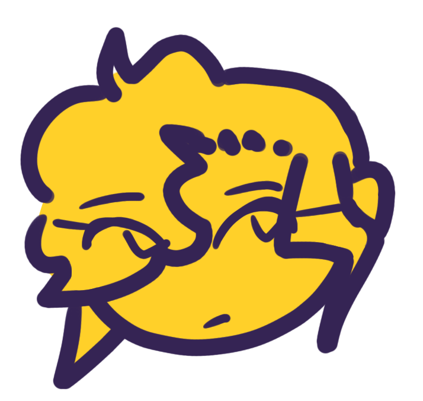
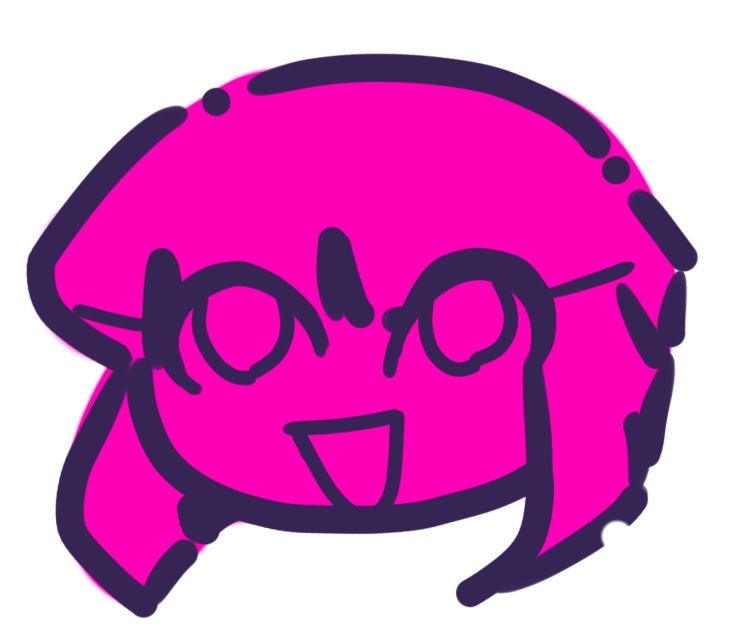
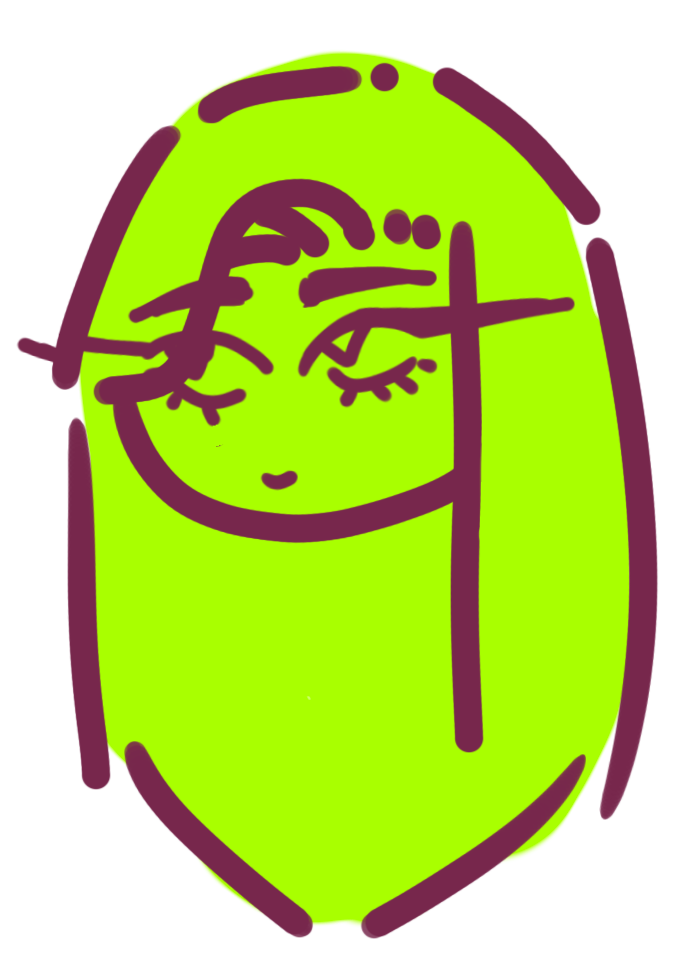
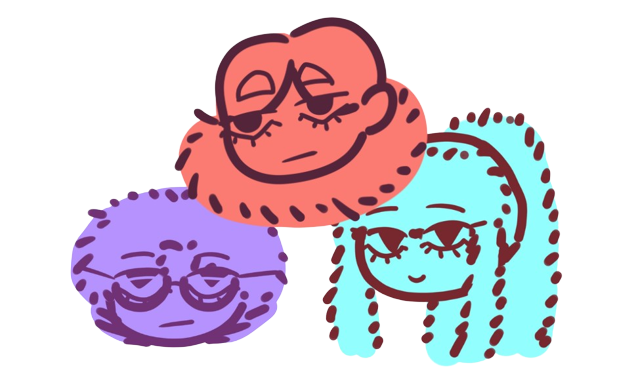

A “Quick” Briefing
Entomopedia is a mixture between the words “Entomology” and “Encyclopedia”. I decided on this mixture because each character has some kind of element that is related to insects, and the story is like a study about them. The school that Bee goes to has a ranking system based on how power-full you are, and humans usually do not have powers, but Bee is special.... Just kidding! She does not have powers at all, she is just very flexible, aware of her surroundings, can dodge very well, and can solve problems really quickly. Faeries (elfs, gnomes, etc) and the Undead (ghosts, zombies) are the only guys who have powers naturally, but for different reasons. The fae are born with powers (like how they are born with pointy ears), while the Undead died at some point, so their soul (personality and life), and their cause of death are somewhat related. As mentioned before, the more power you have, they higher you ranke is, with the lowest rank being Cockroach and the higher being Butterfly (Where most of the Student Council is). Bee was happy to be in the Cockroach rank because rank reflects capability at this school, and people who are not capable are not intrusted with important jobs, and to Bee, the less work, the better! She was later “promoted” to the Beetle Rank (along with Ren), because they accidently saved their whole entire school from a phantom attack, whoopsies! Now, Bee is obligated to actually do stuff, because each Beetle class has a Butterfly-Ranked student to keep the class in check, and lucky her, she landed the heir to the throne and student council president, Paris.
Rather than being plot-driven with crazy action scenes like other comics that have superpower relations, this story will be character driven, and focus on the wacky hijinks they get into.
Now, what are phantoms? They are Undead (similar to zombies) so they have powers, but they are more dead than human (like more ghost than zombie). They can take many forms, but how human they look depends on how many souls they’ve eaten. The less souls they have eaten, the more monsterous they look and have less control over their conscience. This is the only way to survive, so they must uhhh...kill someone for their soul. If they eat human souls, they only gain more conscience and look more human, but if they eat more souls of other Undead or Fae, their powers become stronger. Some use this knowledge to their advantage and purposely only hunt down fae or powerful Undead. The thing is, if they stop eating souls, they will slowly turn back to their soul’s purest form (very lovecraftian monsters) and they don’t want that so they must keep eating souls and killing people!
Important Characters



